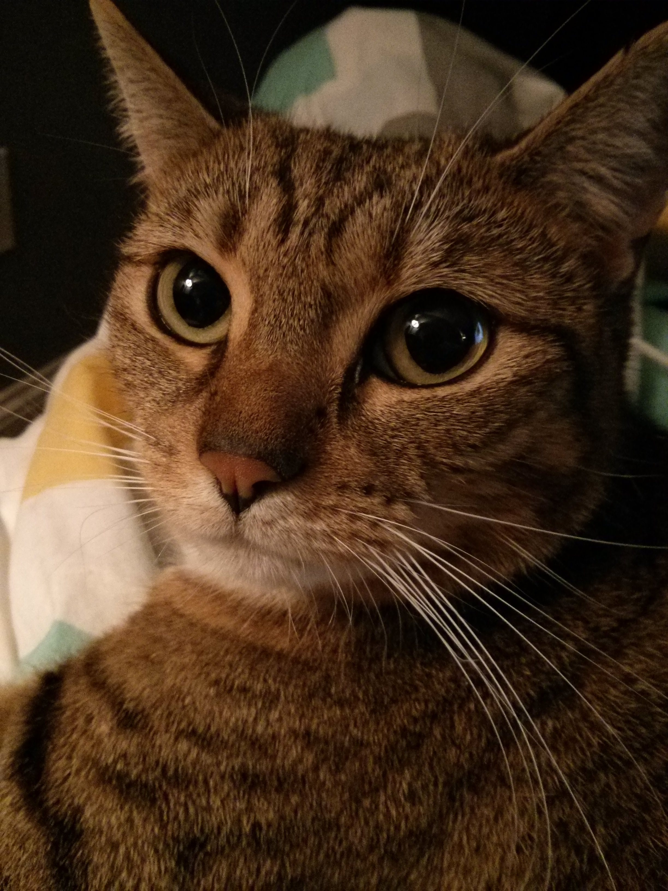
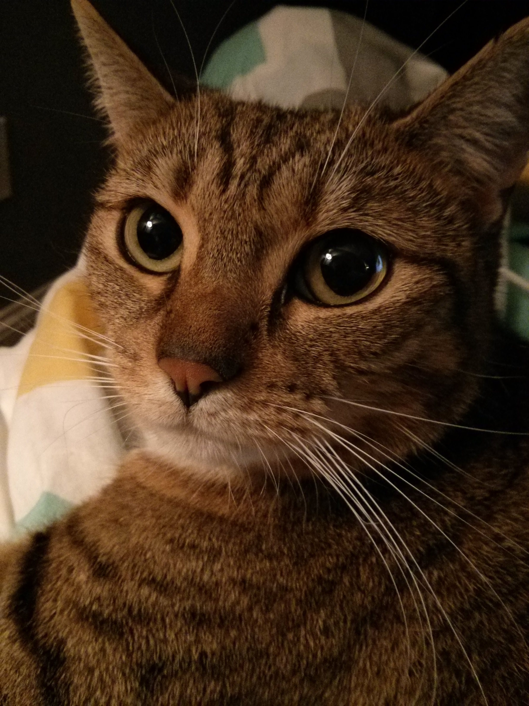

Maude is the tuxedo; June is the tabby. We adopted both of them in Spring/Summer of 2014, from the East Providence Volunteer Services for Animals, when they were both about two years old. Maude is a cutie but likes to interact with people on her terms! June, on the other hand, wants snuggles 24/7/265!
 
